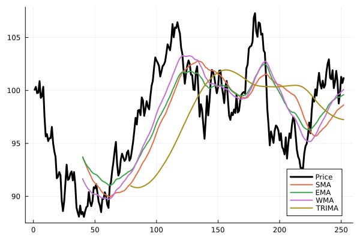

Moving Averages
Example
using Indicators, Plots, Random
Random.seed!(1)
x = 100 .+ cumsum(randn(252))
mafuns = [sma, ema, wma, trima]
m = hcat([f(x, n=40) for f in mafuns]...)
plot(x, linewidth=3, color=:black, label="Price")
plot!(m, linewidth=2, label=permutedims(uppercase.(string.(mafuns))))"/home/runner/work/Indicators.jl/Indicators.jl/docs/build/ma_example.svg"
Reference
Indicators.alma — Method
alma(x::AbstractVector{<:Real}; n::Int=9, offset::Real=0.85, sigma::Real=6.0)::Vector{Float64}Arnaud-Legoux moving average (ALMA)
Indicators.dema — Method
dema(x::AbstractVector{<:Real}; n::Int=10, alpha::Real=2.0/(n+1), wilder::Bool=false)::Vector{Float64}Double exponential moving average (DEMA)
Indicators.ema — Method
ema(x::AbstractVector{<:Real}; n::Int=10, alpha::Real=2.0/(n+1), wilder::Bool=false)::Vector{Float64}Exponential moving average (EMA)
Indicators.hama — Method
hama(x::AbstractVector{<:Real}; n::Int=10)::Vector{Float64}Hamming moving average (HAMA)
Indicators.hma — Method
hma(x::AbstractVector{<:Real}; n::Int=20)::Vector{Float64}Hull moving average (HMA)
Indicators.kama — Method
kama(x::AbstractVector{<:Real}; n::Int=10, nfast::Int=2, nslow::Int=30)::Vector{Float64}Kaufman adaptive moving average (KAMA)
The smoothing constant adapts between those of nfast- and nslow-period exponential moving averages according to the efficiency ratio over the last n periods.
Indicators.mama — Method
mama(x::AbstractVector{<:Real}; fastlimit::Real=0.5, slowlimit::Real=0.05)MESA adaptive moving average (MAMA)
Output
A NamedTuple (mama, fama) of the MESA adaptive and following adaptive moving averages.
Indicators.mma — Method
mma(x::AbstractVector{<:Real}; n::Int=10)::Vector{Float64}Modified moving average (MMA)
Indicators.sma — Method
sma(x::AbstractVector{<:Real}; n::Int=10)::Vector{Float64}Simple moving average (SMA)
Indicators.swma — Method
swma(x::AbstractVector{<:Real}; n::Int=10)::Vector{Float64}Sine-weighted moving average
Indicators.tema — Method
tema(x::AbstractVector{<:Real}; n::Int=10, alpha::Real=2.0/(n+1), wilder::Bool=false)::Vector{Float64}Triple exponential moving average (TEMA)
Indicators.trima — Method
trima(x::AbstractVector{<:Real}; n::Int=10, ma::Function=sma)::Vector{Float64}Triangular moving average (TRIMA)
Indicators.vwap — Method
vwap(close::AbstractVector{<:Real}, volume::AbstractVector{<:Real})::Vector{Float64}Volume-weighted average price (VWAP)
Indicators.vwma — Method
vwma(close::AbstractVector{<:Real}, volume::AbstractVector{<:Real}; n::Int=10)::Vector{Float64}Volume weighted moving average (VWMA)
Indicators.wma — Method
wma(x::AbstractVector{<:Real}; n::Int=10, wts::AbstractVector{<:Real}=collect(1:n)/sum(1:n))::Vector{Float64}Weighted moving average (WMA)
Indicators.zlema — Method
zlema(x::AbstractVector{<:Real}; n::Int=10, ema_args...)::Vector{Float64}Zero-lag exponential moving average (ZLEMA)
Indicators.runacf — Method
runacf(x::AbstractVector{<:Real}; n::Int=10, maxlag::Int=n-3, lags::AbstractVector{Int}=0:maxlag, cumulative::Bool=true)::Matrix{Float64}Compute the running/rolling autocorrelation of a vector.
Output
A matrix with one row per observation and one column per lag in lags.
Indicators.runcor — Method
runcor(x::AbstractVector{<:Real}, y::AbstractVector{<:Real}; n::Int=10, cumulative::Bool=true)::Vector{Float64}Compute the running or rolling correlation of two arrays
Indicators.runcov — Method
runcov(x::AbstractVector{<:Real}, y::AbstractVector{<:Real}; n::Int=10, cumulative::Bool=true)::Vector{Float64}Compute the running or rolling covariance of two arrays
Indicators.runfun — Method
runfun(x::AbstractVector{<:Real}, f::Function; n::Int=10, cumulative::Bool=false, args...)::Vector{Float64}Apply a general function f that returns a scalar over a rolling (or, if cumulative, expanding) window of x. Extra keyword arguments are passed to f.
Indicators.runmad — Method
runmad(x::AbstractVector{<:Real}; n::Int=10, cumulative::Bool=true, fun::Function=median)::Vector{Float64}Compute the running or rolling mean absolute deviation of an array
Indicators.runmax — Method
runmax(x::AbstractVector{<:Real}; n::Int=10, cumulative::Bool=true, inclusive::Bool=true)::Vector{Float64}Compute the running or rolling maximum of an array
Indicators.runmean — Method
runmean(x::AbstractVector{<:Real}; n::Int=10, cumulative::Bool=true)::Vector{Float64}Compute a running or rolling arithmetic mean of an array.
Indicators.runmin — Method
runmin(x::AbstractVector{<:Real}; n::Int=10, cumulative::Bool=true, inclusive::Bool=true)::Vector{Float64}Compute the running or rolling minimum of an array
Indicators.runquantile — Method
runquantile(x::AbstractVector{<:Real}; p::Real=0.05, n::Int=10, cumulative::Bool=true)::Vector{Float64}Compute the running/rolling quantile of an array
Indicators.runsd — Method
runsd(x::AbstractVector{<:Real}; n::Int=10, cumulative::Bool=true)::Vector{Float64}Compute the running or rolling standard deviation of an array
Indicators.runsum — Method
runsum(x::AbstractVector{<:Real}; n::Int=10, cumulative::Bool=true)::Vector{Float64}Compute a running or rolling summation of an array.
Indicators.runvar — Method
runvar(x::AbstractVector{<:Real}; n::Int=10, cumulative::Bool=true)::Vector{Float64}Compute the running or rolling variance of an array
Indicators.crossover — Method
crossover(x::AbstractVector{<:Real}, y::AbstractVector{<:Real})::BitVectorFind where x crosses over y (returns boolean vector where crossover occurs)
Indicators.crossunder — Method
crossunder(x::AbstractVector{<:Real}, y::AbstractVector{<:Real})::BitVectorFind where x crosses under y (returns boolean vector where crossunder occurs)
Indicators.diffn — Method
diffn(x::AbstractVector{<:Real}; n::Int=1)::Vector{Float64}Lagged differencing
Indicators.wilder_sum — Method
wilder_sum(x::AbstractVector{<:Real}; n::Int=10)::Vector{Float64}Welles Wilder summation of an array